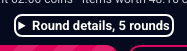
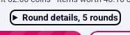

Commit block
Where money is spent: how many to open, the act with the total riding in it, the case's risk, and under them the balance after the open, the coin's peg, the route to the return and the expected value, and the server seed hash before the act (D-28, D-31). Everything on this page is drawn by design/system/components/commit-block.css through index.css, the same file a screen will load.
Anatomy
After this open, 61.80 coins · 1 coin = $1.00 · RTP 94.2 %, expected value 11.68 coins
60a523…e90ce6| Part | Class or element | What to change there |
|---|---|---|
| The block | .commit with data-state | the column of the plate and the lines under it, centred; its state is set by the product's script (below); the content edge under 900px |
| The plate | .commit__plate | the bar the controls stand on (--bg-plate, its violet edge): the count, the act and the risk in three columns from 900px, stacked under it |
| The count | Segmented control (level 1) .seg.commit__count | one to five cases; the block only places it at the plate's start; its hover, press and chosen look are the atom's |
| The act | .commit__act with Button (level 1) .button--primary.button--l.button--priced.commit__go | the open with the total in its chip, never narrower than 220px; for a guest, Sign in with the price as a Figure (level 1) .fig--money.fig--l beside it, which the act aligns (rename map row 14) |
| The risk | .commit__risk with data-risk, __band, __bolts with four Icon (level 1) bolts | the band's word and four 28px bolts, lit in the band's colour (.is-on); "Risk" for a screen reader (__sr) |
| The money line | .commit__line with a Text link (level 1) | the balance after the open, the coin's peg and the route to RTP and expected value, in the body grey at 13px; when short, a Note line (level 1) .note--refuse with Add funds stands in a line of its own |
| The hash | Copyable value (level 2) .copy-value--inline.commit__hash | the server seed hash of each round to come, shown before the act |
| The outcome | .commit__net (a Figure), __inst, __acts with __wide, __saved, __links, __rounds | after the open: the net of a gain (no figure for a loss), the round's facts or Round details, Sell and Open again (full width on a phone), where it is saved, the routes to check and share |
It holds six components and restyles none: Figure, Segmented control, Button, Text link, Note line and Icon at level 1, Copyable value at level 2. What is the organism's own is the plate, the risk, the lines, the outcome's facts and how it places what it holds: the count, the act and the risk on the plate's three columns, the guest's Figure aligned by the act, the act's minimum width, the acts full width on a phone, the 18px value of the guest's price on a phone.
Variants and sizes
One form, with the states of a purchase as its content. Sizes below are read from the render. The block answers to the window, not to its container: three columns on the plate from 900px, the count, the act and the risk stacked under 900px, and under 600px the act takes the row with its label at its start and its total at its end (the Button's --priced, rename map row 8). This page at 1440 shows the wide form; open it at 360 to see the phone form.
- State = where the purchase is. Guest (the price as a Figure beside Sign in, no count and no hash), funded (the count, Open n cases with the total), short (the act stays live and the refusal is said under it with Add funds, D-58), open (the act busy, Rolling, the line says the results were fixed first), outcome (what came out), interrupted (the outcome led by the line that says the reveal did not finish and the result is already yours). Degraded and no counter draw the guest's form.
- Data = the case's risk band. Low, medium, high and extreme, one to four bolts lit in the band's colour. No case carries extreme yet (founder of 2 Nov 2026).
- The net is a gain only (D-219, D-221): a loss or an even open shows no figure, only what was spent and what the items are worth.
1 coin = $1.00 · RTP 94.2 %, expected value 11.68 coins
After this open, 12.20 coins · 1 coin = $1.00 · RTP 94.2 %, expected value 58.40 coins for 5 opens
60a523…e90ce69c41d0…3b7a152e8f6b…c0d9417a03e2…51f8bdd5b91c…08e4a7You have 30.00 coins, 7.20 coins short. Add funds
1 coin = $1.00 · RTP 94.2 %, expected value 35.04 coins for 3 opens
60a523…e90ce69c41d0…3b7a152e8f6b…c0d941Opening. The result was fixed before the animation started.
60a523…e90ce6As of 18 Aug 2026 14:58 · Float 0.1174 · Pattern 418 · Inspect in game
Value 12.90 coins · a copy on sale 14.19 coins, read 18 Aug 2026 14:58
Saved to My items, where it can be sent to Steam. Selling cannot be undone.
Round details, 5 rounds
Every round, in the order of the row above, which is the order of the reels.
- AK-47 Redline · Float 0.1174 · Pattern 418 · Check this round · Inspect in game
- Glock-18 Water Elemental · Float 0.2210 · Pattern 77 · Check this round · Inspect in game
All 5 saved to My items, where they can be sent to Steam. Selling cannot be undone.
The reveal did not finish on this device. The result was fixed before the animation started, so it is already yours and it is below.
When to use
A commit block stands under the case stage, at the one place a case is bought: the case screen, and the case shown in the Deposit and Sign in dialogs. It puts the cost in the act itself and the return and the expected value one line under it, before the press, so the number a player weighs is never somewhere else (design principle 3). The act carries the total, never the unit (D-31); the coin's peg is printed wherever money is spent (D-28).
Rule and anti-rule
Use it
Opening a case for coins: how many, for how much, at what risk, with the hash before the act and what came out after it, in one block that keeps its place while the stage plays.
Take another component
Putting money in is the Deposit dock. The figures a player weighs before choosing a case are the Money strip. One price on a card is a Figure. A single act with its price, anywhere else, is a Button with --priced. What came out, as a card, is the Outcome card.
States
The block's states are set by the product's script (design/kit/stage.js: drawCommit, open, the outcome) as data-state on .commit: guest, funded, short, open, outcome, interrupted; while it opens the act wears aria-busy="true" and the count's options are disabled. They are drawn above, as the attribute the script sets; no script loads on this page. The block's own interactive part is the summary of Round details, a batch's facts: point at it, reach it with Tab. Every control it holds keeps its own states (the count's hover and press, the act's lit face, the links).
Round details, 5 rounds
Every round, in the order of the row above, which is the order of the reels.
- AK-47 Redline · Float 0.1174 · Pattern 418 · Check this round · Inspect in game
- Glock-18 Water Elemental · Float 0.2210 · Pattern 77 · Check this round · Inspect in game
All 5 saved to My items, where they can be sent to Steam. Selling cannot be undone.
A snapshot of the same instance, dark on the left and light on the right, taken with reduced motion.


--line-focus, 4px corners- No hover and no press of its own: kit.css draws none on the summary, and the block never draws one for a control it holds.
- No disabled look. Short, the act stays live: a press refuses and puts the focus on Add funds beside the reason (D-58). Only the Button's busy face while it rolls.
node design/kit/tools/shoot-states.js http://localhost:8765/ commit-block # re-shoot after a change to commit-block.css or its tokens node design/kit/tools/shoot-states.js http://localhost:8765/ commit-block --check # step 9: fails if a snapshot drifted
In the code
| Token | Kind | Dark | Light |
|---|
Read live from tokens.css. Geometry, type and motion come straight from the primitives; every pixel literal that no primitive equals is a custom property of the block (--commit-*), each with its origin in the file. No component token: the fourth band's lit bolt reads the role --text-risk-extreme, shared with the Case tile (D-266, Q1). One colour read in this block only, waiting for step 9: --color-skull-off-plate, an unlit bolt.
File: design/system/components/commit-block.css, loaded by design/system/index.css in the organisms' group.
<section class="commit" data-price="12.40" data-state="funded" aria-label="Open this case">
<div class="commit__plate">
<div class="seg commit__count" role="group" aria-label="Cases to open">...</div>
<div class="commit__act"><button class="button button--primary button--l button--priced commit__go" type="button">...</button></div>
<div class="commit__risk" data-risk="medium"><span class="commit__sr">Risk</span><span class="commit__band">Medium</span><span class="commit__bolts" aria-hidden="true">...</span></div>
</div>
<p class="commit__line">After this open, 61.80 coins · 1 coin = $1.00 · <a class="link" href="#h2-pays">RTP 94.2 %, expected value 11.68 coins</a></p>
<div class="copy-value copy-value--inline commit__hash">...</div>
</section>
<!-- a guest: the price beside Sign in, no .fig--end (row 14): the act aligns it -->
<div class="commit__act"><div class="fig fig--money fig--l">...</div><a class="button button--primary button--l commit__go" href="signin.html">Sign in</a></div>
Stands on: the case screen (and its states interrupted, degraded, no counter), and the case shown in Deposit and Sign in. Until step 8 those screens still read kit.css; step 6 moves their markup onto this file's form by the rename map (rows 8 and 14) and the screen's placing of the block (.shell__main > .commit) into design/system/screens/.